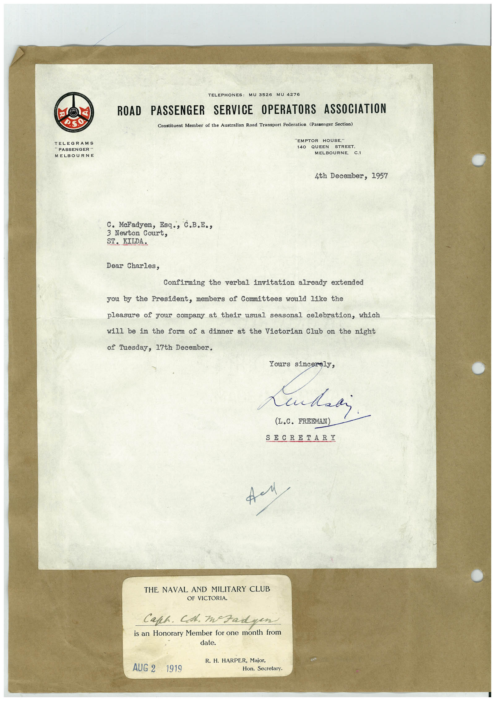

Book 1 · scan 025


Description
Transcription
Context
Review notes
Compare the machine draft with the scan. Handwriting and names need human review.
Artifacts
Edit the artifacts field in this note’s frontmatter to change these records. This summary is generated.
B01-S025-A01 — Letter & Handwritten note — Book 1, scan 025
Types: Typed document, Letter, Handwritten note
Scope: Whole scanned page; individual items can be split out during review.
Caption: Not mapped yet.
Caption source: Not recorded yet.
Caption status: unmapped
Machine transcription
TELEGRAMS "PASSENGER " MELBOURNE TELEPHONES: MU 3526 ROAD PASSENGER SERVICE OPERATORS ASSOCIATION Constituent Member of the Australian Road Transport Federation (Passenger Section) "EMPTOR HOUSE," 140 QUEEN STREET. MELBOURNE, C.1 4th December, 1957 C. MeFadyen, Esq., C.B.E., 3 Newton Court, ST. KILDA. Dear Charles, Confirming the verbal invitation already extended you by the President, members of Committees would like the pleasure of your company at their usual seasonal celebration, which will be in the form of a dinner at the Victorian Club on the night of Tuesday, 17th December. Yours sincerely, (L.C. FREEMAN) SECRETARI THE NAVAL AND MILITARY CLUB OF VICTORIA. Caph. Cst. Izadyen is an Honorary Member for one month from AUG 2 1919 R. H. HARPER, Major, Hon. Secretary.